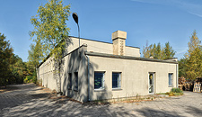

O FIRMIE
Firma Fasliter istnieje od 20 lat.
Nasz zakład zatrudnia 20 osób. Dzięki ciągłemu rozwojowi i gromadzonemu doświadczeniu możemy Państwu zaoferować wysokiej klasy produkty i usługi. Bogaty park maszynowy oraz doświadczenie pozwalają na profesjonalne prowadzenie produkcji opakowań z różnych materiałów.
Wieloletnia i harmonijna współpraca z naszymi kontrahentami pozwala nam zaoferować Państwu obsługę kompleksową, obejmującą projektowanie, druk, wycięcie, klejenie oraz dostarczenie gotowego opakowania do klienta.
Wykonujemy opakowania z papieru, tektury litej, tektury falistej, priplaku. Produkujemy m.in. standy reklamowe, ekspozytory reklamowe, torby reklamowe, torby papierowe, etykiety, obwoluty, wkładki usztywniające, kształtki. Przyjmujemy do realizacji projekty zewnętrzne. Wykonujemy usługowo klejenie, sztancowanie, nadruki.
Firma Fasliter ma w swoim dorobku realizacje i projekty dla klientów krajowych i zagranicznych, producentów artykułów przemysłowych, spożywczych, firm farmaceutycznych, odzieżowych, kosmetyków, chemicznych, agd i innych.
Na naszej stronie prezentujemy jedynie wybrane produkty. Jeśli są Państwo zainteresowani naszą ofertą prosimy o kontakt. Z przyjemnością odpowiemy na każde pytanie.
